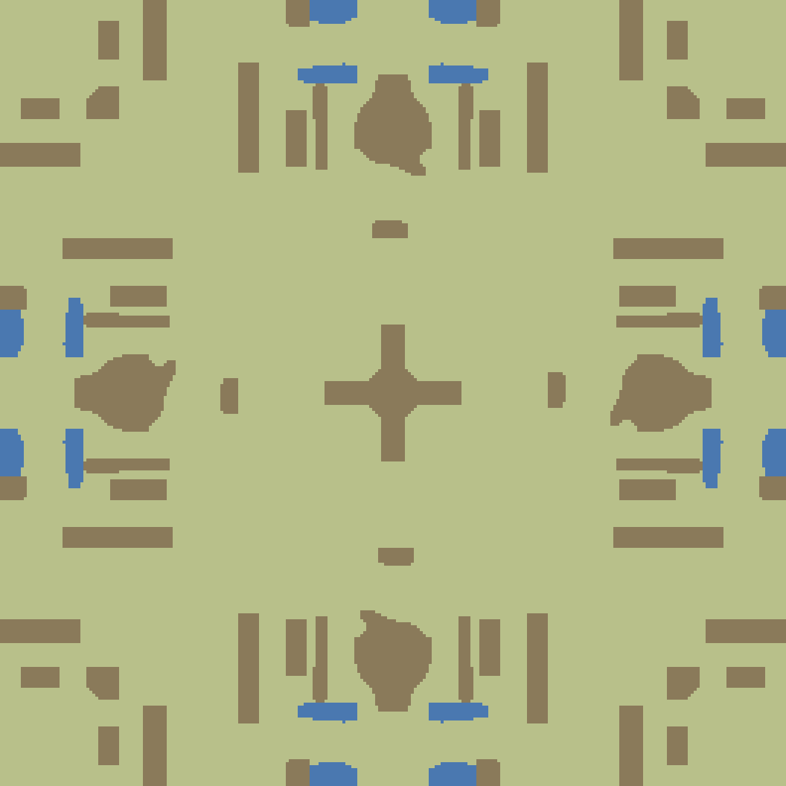
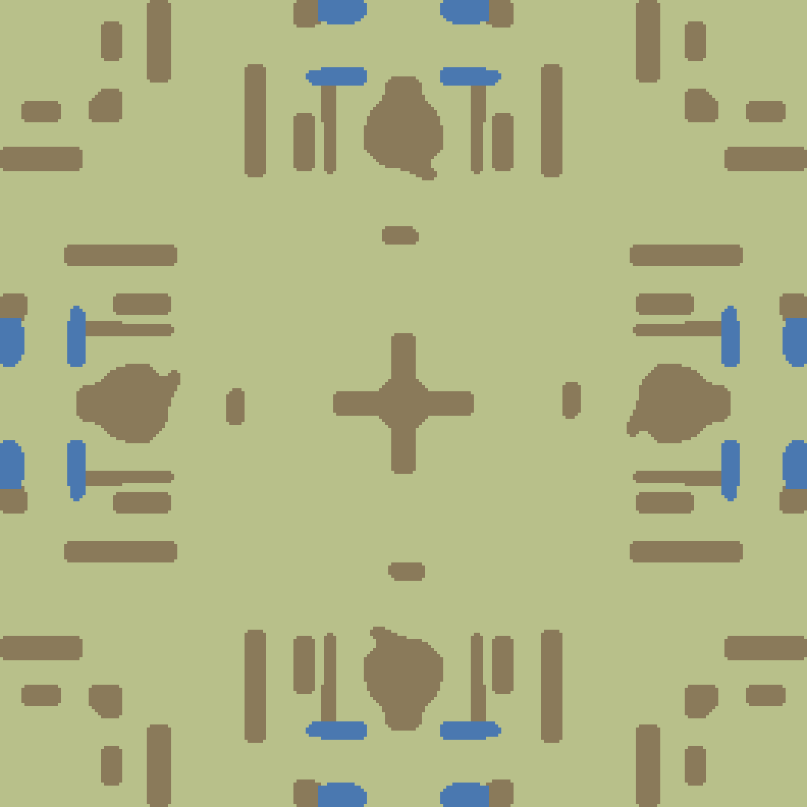

未平滑

旧「圆角」(corner) 填凹口会把 3 边凹角换成 5 边凸点，拉长边界 +15~30%（更碎，与「圆滑」相反）。 新默认（majority）削凸尖 + 填凹洞且缩短边界、面积守恒。同底图逐格对比。


| seed | 面积变化 maj / corner | 周长变化 maj / corner（✓=更短/更圆滑） |
|---|---|---|
| 1791539239263 | maj -1.88% / corner -1.88% | maj 0.19% ≈ / corner 15.83% ✗ |
| 1791539240000 | maj -0.45% / corner -1.18% | maj -1.86% ✓ / corner 26.15% ✗ |
| 1791539200000 | maj -0.37% / corner -1.09% | maj -4.33% ✓ / corner 25.34% ✗ |
| 1791539300000 | maj -0.74% / corner -0.51% | maj -2.03% ✓ / corner 29.61% ✗ |
WF_NO_ROUND=1 关闭平滑做 A/B。WF_ROUND_PASSES=N 轮数（默认 1；多数滤波 1 轮即够）。WF_ROUND_MODE=corner 退回旧「单格翻转」对照（不推荐：拉长边界）。本平滑只改服务端类型网格轮廓；客户端崖线（ui.js 18px 单侧崖面）未动。崖线台阶的直角来自高度场量化（buildHeightField 的 ±1 层并入邻档），属另一系统。